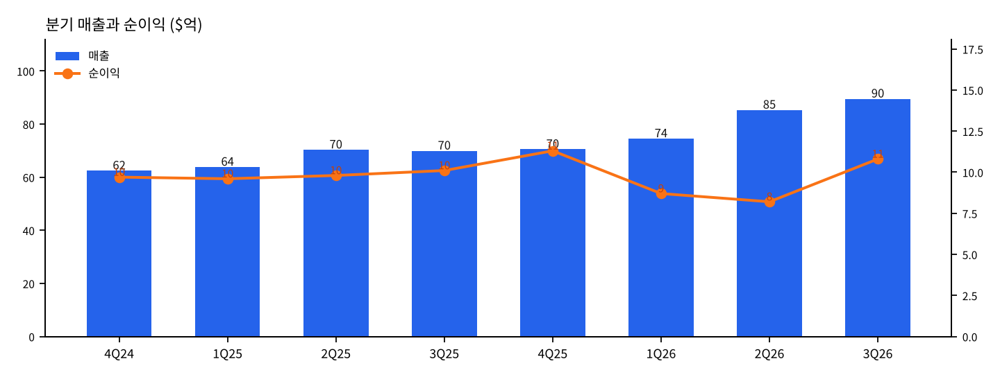
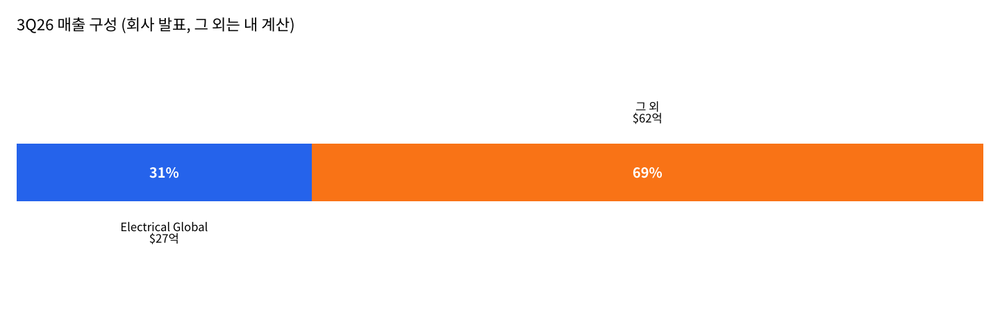
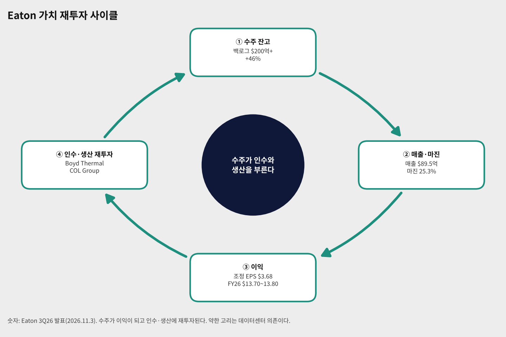

Eaton은 데이터센터와 전력망에 필요한 전력 장비를 팔고 수주 잔고에서 매출을 만든다. 인수로 열관리 같은 신규 영역을 키운다.
| 항목 | 내용 |
|---|---|
| 종목 | Eaton (ETN) · NYSE · 산업재(전력 관리) · 아일랜드 더블린 |
| 최근 분기(3Q26) | 매출 $89.5억, 조정 EPS $3.68 |
| 핵심 사업 | Electrical Global, 항공, 차량 |
| 직원 수 | 약 97,000명(트레이딩뷰) |
| 멀티플 | PER·PEG·P/S는 08~10 항목 표 참조 |
| 직책 | 인물 | 역할·특징 |
|---|---|---|
| CEO | 파울로 루이스(Paulo Ruiz) | CEO |
| CFO | (확인 필요) | 회사 공개 자료 기준 확인 필요 |
경영 스타일: 전력 수요 집중. 데이터센터·전력망 수요를 겨냥해 수주와 인수를 확대한다.
Boyd Thermal 인수로 데이터센터 냉각 영역을 넓혔다.
전기 부문 백로그 $200억 이상.
다음 실적발표는 세 가지 질문에 답하는 자리다.
1. 데이터센터 수주가 이어지나?
2. 4Q 유기 성장이 +13~15%를 지키나?
3. 인수 통합이 마진을 지키나?
한 줄 판정 규칙: 첫 질문(데이터센터 수주)이 이어지면 약한 고리(수요 집중)가 가려진다.
일정: 4Q26 실적은 2027.01.29 발표 예정이다. FY27 가이던스도 이때 나올 수 있다(확인 필요).
| 분기 | 매출 | 순이익 | EPS | 조정 EPS | 특이 사항 |
|---|---|---|---|---|---|
| 4Q24 | $62.4억 | $9.7억 | 2.45 | 2.83 | |
| 1Q25 | $63.8억 | $9.6억 | 2.45 | 2.72 | |
| 2Q25 | $70.3억 | $9.8억 | 2.51 | 2.95 | |
| 3Q25 | $69.9억 | $10.1억 | 2.59 | 3.07 | |
| 4Q25 | $70.5억 | $11.3억 | 2.91 | 3.33 | |
| 1Q26 | $74.5억 | $8.7억 | 2.23 | 2.81 | |
| 2Q26 | $85.3억 | $8.2억 | 2.11 | 3.15 | |
| 3Q26 | $89.5억 | $10.8억 | 2.77 | 3.68 | 유기 +19%, 데이터센터 +65% |
매출은 트레이딩뷰 스캐너의 분기 총매출이라 회사가 발표한 순매출과 다를 수 있다. 매출·순이익·EPS(GAAP 희석)는 트레이딩뷰 스캐너, 조정 EPS는 트레이딩뷰 실적 페이지의 Reported 값이다. 분기 정렬은 오래된 분기→최신이다.

흐름 요약: 최근 분기 매출은 $89.5억로 전년 동기 $69.9억 대비 +28.0%, 순이익은 $10.8억(전년 $10.1억)다. 최근 4분기 GAAP EPS는 $10.02, 조정 EPS는 $12.97다.
| 항목 | 내용 | 3Q26 매출 | 비고 |
|---|---|---|---|
| Electrical Global | 전력 관리 장비 | $27.3억 | +58% |
| 그 외(내 계산) | 전기 다른 부문·항공·차량 등 | $62.2억 | 총 $89.5억에서 위 항목을 뺀 값 |

Electrical Global이 가장 빠르게 늘고 있다. 부문별 상세는 이 보고서에 수집하지 않았다.
Eaton은 더 효율적이고 안전한 전력 관리를 제공하는 것을 목표로 한다.
| 축 | 내용 |
|---|---|
| 백로그 | 전기 부문 $200억+ |
| 마진 | 세그먼트 25.3% |
| 성장 | 유기 +19% |

| 이동평균 | 값 | 종가 대비 | 위치 |
|---|---|---|---|
| 5일선 | $344.87 | -1.9% | 종가 아래 |
| 20일선 | $361.29 | -6.4% | 종가 아래 |
| 50일선 | $396.61 | -14.7% | 종가 아래 |
| 100일선 | $406.23 | -16.7% | 종가 아래 |
| 200일선 | $397.49 | -14.9% | 종가 아래 |
52주 고가 $478.00(2026-08-12)·저가 $311.92(2025-12-17) 범위에서 종가 $338.34는 모든 이동평균선 아래이고.
| 규칙 | 기준 | 현재 값 | 신호 |
|---|---|---|---|
| 장기 추세 필터 | 종가 vs 200일선 | $338.34 < $397.49 | 매도 |
| 중장기 교차 | 50일선 vs 200일선 | $396.61 < $397.49 | 매도 |
| 단기 교차 | 20일선 vs 50일선 | $361.29 < $396.61 | 매도 |
| 돈키언 채널 | 55일 고가 $452.00 / 저가 $324.27 | 중간값 $388.13 아래 | 매도 |
| 1개월 모멘텀 | 21거래일 수익률 | -11.4% (기준 $381.98) | 매도 |
| 3개월 모멘텀 | 63거래일 수익률 | -18.5% (기준 $415.29) | 매도 |
| 6개월 모멘텀 | 126거래일 수익률 | -10.9% (기준 $379.69) | 매도 |
| 12개월 모멘텀 | 252거래일 수익률 | -1.3% (기준 $342.75) | 매도 |
| 종합 (8개 평균) | -1.00 | 강한 매도 |
해석: 매수 신호 0개(없음), 매도 신호 8개(장기 추세 필터, 중장기 교차, 단기 교차, 돈키언 채널, 1개월 모멘텀, 3개월 모멘텀, 6개월 모멘텀, 12개월 모멘텀). CTA 점수 -1.00(강한 매도). 14일 ATR $20.44 (6.0%), 52주 고가 $478.00 · 저가 $311.92.
| 가격 | 기준 | 무엇이 바뀌나 |
|---|---|---|
| $452.00 | 55일 고가 | 돌파 시 채널 상단 갱신 |
| $415.29 | 3개월 모멘텀 기준가 | 종가가 이 가격 위면 3개월 신호 매수 |
| $397.49 | 200일선 | 종가가 이 선 위/아래인지로 장기 추세 신호가 바뀜 |
| $388.13 | 돈키언 중간값 | 55일 채널 중간값 위/아래로 신호가 바뀜 |
| $381.98 | 1개월 모멘텀 기준가 | 종가가 이 가격 위면 1개월 신호 매수 |
| $379.69 | 6개월 모멘텀 기준가 | 종가가 이 가격 위면 6개월 신호 매수 |
| $342.75 | 12개월 모멘텀 기준가 | 종가가 이 가격 위면 12개월 신호 매수 |
| $324.27 | 55일 저가 | 이탈 시 채널 하단 갱신 |
가격 수준은 신호가 바뀌는 기준선일 뿐 진입·청산 가격 제안이 아니다. 20일/50일 교차는 이동평균 자체가 움직여 단일 가격으로 표시하지 않았다. 일봉·주봉은 종가 기준 직접 계산(고저 데이터 미사용)이다.
| 악재 요인 | 내용 | 강도 |
|---|---|---|
| 데이터센터 의존 | 데이터센터 수요 집중 | 중간 |
| 인수 통합 | Boyd·COL 통합 부담 | 중간 |
| 높은 기대 | 컨센서스 상회 이후 눈높이 상승(내 해석) | 참고 |
| 티커 | 회사 | PER(TTM) | PEG | P/S | EPS 성장(YoY) |
|---|---|---|---|---|---|
| ETN | Eaton | 26.1배 | 2.16 | 4.11배 | +12% |
| EMR | Emerson Electric | 33.9배 | 1.84 | 4.69배 | +18% |
| PH | Parker-Hannifin | 31.6배 | 8.56 | 5.25배 | +4% |
| ROK | Rockwell Automation | 31.6배 | 0.49 | 4.84배 | +64% |
| GEV | GE Vernova | 20.3배 | 0.04 | 4.75배 | +518% |
비교 결론: Eaton의 PER 26.1배는 Emerson·Parker-Hannifin·Rockwell보다 낮고 GE Vernova보다 높다. PEG 2.16는 Emerson(1.84)·Rockwell(0.49)·GE Vernova(0.04)보다 높고 Parker-Hannifin(8.56)보다 낮다.
현금·부채는 트레이딩뷰 스캐너 값이다. 인수로 부채가 늘었다.
| 지표 | 값 | 출처 | 해석 |
|---|---|---|---|
| 현금·단기투자 | $8억 | 트레이딩뷰 스캐너(최근 분기) | |
| 총부채 | $209억 | 트레이딩뷰 스캐너(최근 분기) | |
| 순부채(부채−현금) | $201억 | 내 계산 | 현금 대비 부채 부담 |
| 잉여현금흐름(TTM) | $38억 | 트레이딩뷰 스캐너 | |
| TTM 매출 | $320억 | 트레이딩뷰 스캐너 |
| 기준 | 매출 | P/S | 비고 |
|---|---|---|---|
| 내 계산(종가 ÷ 최근 4분기 매출 합계) | $319.8억 | 4.11배 | 시총은 정렬용 데이터에서만 사용 |
| 동종(트레이딩뷰) | – | EMR 4.69배 · PH 5.25배 · ROK 4.84배 · GEV 4.75배 | 11.19 |
해석: 이익과 현금흐름이 늘어 이자 부담은 감당 가능하다(내 해석).
EBITDA는 영업활동의 현금 창출력을 보는 지표이고, PEG는 PER을 EPS 성장률로 나눈 값이다. EBITDA·FCF는 트레이딩뷰 TTM 값이다.
| 지표 | 값 | 산출 |
|---|---|---|
| EBITDA(TTM) | $75억 | 트레이딩뷰 스캐너 |
| EBITDA 마진 | 23.4% | EBITDA ÷ TTM 매출(내 계산) |
| FCF 마진 | 11.9% | FCF ÷ TTM 매출(내 계산) |
| PER(GAAP TTM) | 33.8배 | $338.34 ÷ $10.02 |
| PER(조정 TTM) | 26.1배 | $338.34 ÷ $12.97 |
| 방식 | PER | EPS 성장률 | PEG | 판정 |
|---|---|---|---|---|
| 조정 EPS (TTM $12.97) | 26.1배 | +12% ($11.57 → $12.97) | 2.16 | 기준 초과 |
| GAAP EPS (TTM $10.02) | 33.8배 | +0% ($10.00 → $10.02) | 168.83 | 기준 초과 |
판정: 조정 EPS 기준 PEG 2.16 → 1.0 초과 PEG 기준은 1.0 이하 투자 적격, 0.5 이하 적극 매수다. EPS 성장률은 최근 4분기 EPS 합계를 직전 4분기 합계와 비교한 값(내 계산)이고, 일회성 항목이 있으면 조정 EPS 행을 함께 본다.

Eaton의 사이클: 수주가 매출과 이익이 되고 그 돈이 인수·생산에 재투자돼 더 많은 수주를 받는다.
| 고리 | 현재 숫자·근거 |
|---|---|
| ① 수주 잔고 | 전기 부문 백로그 $200억 이상(+46%) |
| ② 매출·마진 | 매출 $89.5억(+28%) · 세그먼트 마진 25.3% |
| ③ 이익 | 조정 EPS $3.68 · FY26 가이던스 $13.70~13.80 |
| ④ 인수·생산 재투자 | Boyd 2026 매출 $19억 · COL Group €8.1억 인수 합의 |
사이클의 특징: 약한 고리는 데이터센터 수요 집중이다. "(내 해석)"은 보고서 수치가 아닌 해석이다.